Business Forecasting
Last week the line gave an answer. This week: how good is that answer, and can we trust it?
Back to Ecobici. In W07 you fitted
\[\widehat{\text{trips}} = 16{,}893 + 723.6 \times \text{temp}\]
on 781 weekdays, and found \(R^2 = 0.088\).
The client’s finance director reads the report and says:
Temperature explains 8.8% of ridership. So the model is useless. Throw it away.
Two separate questions hide in that sentence:
The first question is model fit. The second is diagnostics. This week is both.
\(R^2\) is a share. The client plans her fleet in trips, so she also needs to know how far off a forecast typically is — in trips.
The residual variance is the average squared miss:
\[s^2 = \frac{\cssId{mt-sumu2}{\sum_{i=1}^{n} \hat{u}_i^2}}{\cssId{mt-nminus2}{n-2}}\]
Its square root, \(s = \sqrt{s^2}\), is the residual standard error. It is measured in the units of \(y\) — here, trips.
Use bikes — 781 weekdays, with bikes$trips (Ecobici trips that day) and bikes$temp (average temperature, °C).
bikes$trips on bikes$temp.bikes$trips. This is the typical miss if you ignore temperature and always forecast the mean.summary(reg).sum() is not on the sheet. mean(e^2) times \(n\) is the same as the sum of e^2. Or read the sum of squared residuals from anova(reg): it is anova(reg)[2, 2]. ^0.5 takes a square root.
\(s^2 = 28{,}107{,}095\) and \(s = 5{,}301.6\) trips. The standard deviation of trips is 5,548.5. Knowing the temperature shrinks the typical miss by only about 250 trips, or 4%. summary(reg) prints the same number: “Residual standard error: 5302 on 779 degrees of freedom”.
| Typical miss (trips) | |
|---|---|
| Always forecast the mean | sd(trips) = 5,548 |
| Forecast from temperature | s = 5,302 |
The landlord from W07 quotes rents from floor area. The data frame rents has 150 of her apartments:
rents$size — floor area, in m²rents$rent — monthly rent, in pesosrents$rent on rents$size, in pesos.rents$rent.Same steps as Exercise 1. The sample has 150 apartments, so divide by 148.
\(s = 2{,}708.5\) pesos, against a standard deviation of 6,032.8 pesos. Size cuts the typical miss by more than half. A quote from size alone is typically off by about 2,700 pesos a month.
| R² | s | |
|---|---|---|
| What it measures | share of the variation in y the line explains | size of a typical miss |
| Units | none (0 to 1) | units of y |
| Ecobici | 0.088 | 5,302 trips |
| Landlord | 0.800 | 2,708 pesos |
\(R^2\) compares models of the same \(y\). \(s\) tells a manager how wide to plan around a forecast. You cannot compare 5,302 trips with 2,708 pesos — but you can compare 0.088 with 0.800.
A small \(R^2\) could be a weak relationship — or no relationship at all, plus luck. The F-test tells them apart.
A restaurant chain orders ingredients from a supplier every day. Some deliveries arrive with ingredients missing.
Should the chain move its orders to a different hour? Only if the hour really explains part of the mistakes.
That is what an analysis of variance (ANOVA) checks. It compares two things:
The null hypothesis says the regression explains no more than a model with no predictor at all:
\[H_0: \beta_1 = 0 \qquad \text{against} \qquad H_A: \beta_1 \neq 0\]
If we reject \(H_0\), the regression adds value.
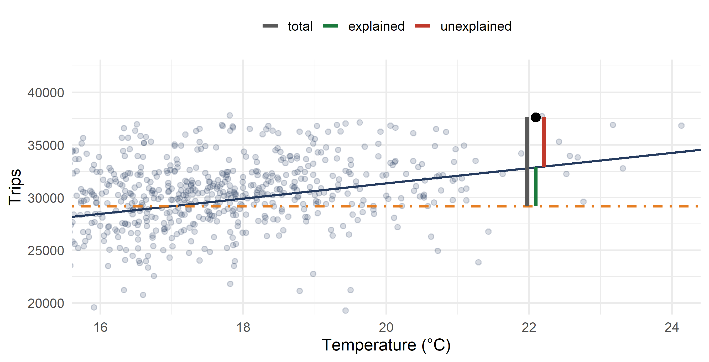
\[\underbrace{y_i - \bar{y}}_{\text{total}} = \underbrace{(\hat{y}_i - \bar{y})}_{\cssId{mt-explained}{\text{explained}}} + \underbrace{(y_i - \hat{y}_i)}_{\cssId{mt-unexplained}{\text{unexplained}}}\]
Square each distance and add over all days:
\[\cssId{mt-sst2}{\sum_{i}(y_i-\bar{y})^2} = \cssId{mt-ssr2}{\sum_{i}(\hat{y}_i-\bar{y})^2} + \cssId{mt-sse2}{\sum_{i}(y_i-\hat{y}_i)^2}\]
| Piece | Formula | Degrees of freedom |
|---|---|---|
| \(SST\) | \(\sum_i(y_i-\bar{y})^2\) | \(n-1\) |
| \(SSR\) | \(\sum_i(\hat{y}_i-\bar{y})^2 = \hat{\beta}_1^2 \sum_i (x_i - \bar{x})^2\) | \(1\) |
| \(SSE\) | \(\sum_i(y_i-\hat{y}_i)^2\) | \(n-2\) |
The degrees of freedom add up too: \((n-1) = 1 + (n-2)\).
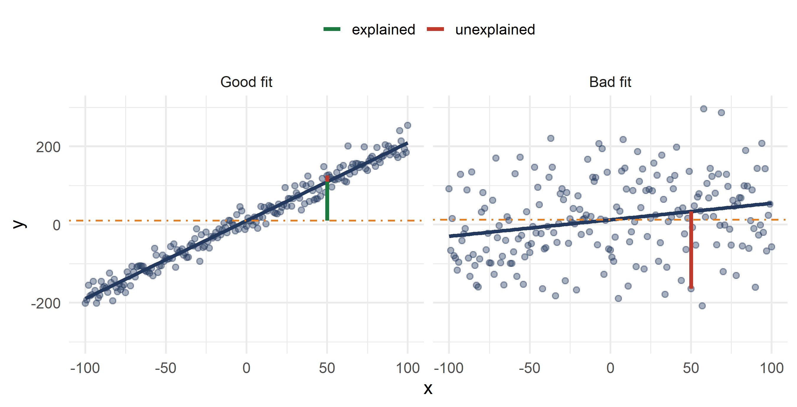
Divide each sum of squares by its degrees of freedom. These are the mean squares:
\[\cssId{mt-msr}{MSR} = \frac{SSR}{1} \qquad \cssId{mt-mse}{MSE} = \frac{SSE}{n-2} = s^2\]
The test statistic compares them:
\[F = \frac{\cssId{mt-fnum}{SSR / df_R}}{\cssId{mt-fden}{SSE / df_E}} = \frac{MSR}{MSE}\]
If \(H_0: \beta_1 = 0\) is true, \(F\) follows an \(F\) distribution with \(1\) and \(n-2\) degrees of freedom. A large \(F\) is evidence for \(H_A: \beta_1 \neq 0\).
Reject \(H_0\) at level \(\alpha\) when \(F > F_{1-\alpha;\,1,\,n-2}\). The p-value is \(P(F_{1,\,n-2} \geq F)\). Why the ratio works.
The test is \(H_0: \beta_1 = 0\) against \(H_A: \beta_1 \neq 0\). Left: the data and the fitted line. Right: the \(F\) distribution if the true slope were 0, with the 5% rejection region shaded. Move the sliders, then show the numbers.
A weak relationship measured on many observations can give a large \(F\). That is the Ecobici situation.
Test at the 5% level whether temperature explains any of the variation in Ecobici trips:
\[H_0: \beta_1 = 0 \qquad \text{against} \qquad H_A: \beta_1 \neq 0\]
in the regression of bikes$trips on bikes$temp (\(n = 781\)).
anova(reg), take \(SSR\) and \(SSE\). Build \(MSR\), \(MSE\) and the \(F\) statistic.anova(reg) output.a <- anova(reg): a[1, 2] is \(SSR\) and a[2, 2] is \(SSE\). qf(0.95, 1, 779) is the critical value. The p-value is the area to the right: 1 - pf(F_stat, 1, 779).
\(MSE = 28{,}107{,}095\) — the \(s^2\) from Exercise 1. \(F = 75.32\), far above the critical value 3.85. The p-value is so small that R prints 0. Reject \(H_0\): temperature explains a real part of the variation in trips. The F value column of anova(reg) shows 75.324.
| Source | Sum of squares | df | Mean square | F |
|---|---|---|---|---|
| Regression (SSR) | 2,117,129,482 | 1 | 2,117,129,482 | 75.32 |
| Residual (SSE) | 21,895,427,100 | n − 2 = 779 | 28,107,095 | |
| Total (SST) | 24,012,556,582 | n − 1 = 780 |
anova(reg) prints the first two rows. The total row is their sum.| Question | Statistic | Ecobici |
|---|---|---|
| How much does temperature explain? | R² | 0.088 |
| Is that more than luck? | F (5% critical value 3.85) | 75.32 |
Temperature explains little of ridership. But what it explains is not luck: with 781 days, a slope of 724 trips per degree cannot come from a world where \(\beta_1 = 0\).
So the finance director is half right. The model is a poor forecaster of any single day. It is not useless: the temperature effect is real.
A brand pays influencers for product placement. It checks whether placements with more popular influencers bring more visits to its website. A simple regression on 15 campaigns gives, from the ANOVA table, \(SSE = 52\) and \(SST = 152\).
Test the significance of the regression at the 5% level with the \(F\) statistic. Write out the whole test: hypotheses, rejection region, test statistic, conclusion. Use 4 decimal places.
\(H_0: \beta_1 = 0\) (influencer popularity does not explain visits) against \(H_A: \beta_1 \neq 0\).
\(SSR = 100\), \(MSE = 52/13 = 4\), so \(F = 100/4 = 25.0000\). Rejection region: \(F > F_{0.95;\,1,\,13} = 4.6672\). Since \(25.0000 > 4.6672\) (p-value 0.0002), reject \(H_0\). Influencer popularity explains a real share of website visits — here \(R^2 = 100/152 = 0.6579\).
The \(F\) statistic can be written with \(SST\) and \(SSE\) only:
\[F = \frac{SSR/df_R}{SSE/df_E} = \frac{\cssId{mt-drop}{(SST - SSE)/(df_T - df_E)}}{SSE/df_E}\]
The top of \(F\) measures how much the unexplained part shrinks when we move from the restricted model to the full one. If it shrinks a lot, reject the restricted model.
With one regressor this is exactly the ANOVA test. From W10 on, with several regressors, the same idea tests whether a group of extra predictors helps.
With a single regressor, three tests ask the same question:
| Test | Null against alternative | Statistic |
|---|---|---|
| correlation test | \(H_0: \rho = 0\) against \(H_A: \rho \neq 0\) | \(T = \dfrac{r\sqrt{n-2}}{\sqrt{1-r^2}} \sim t_{n-2}\) |
| t-test on the slope (W08) | \(H_0: \beta_1 = 0\) against \(H_A: \beta_1 \neq 0\) | \(T = \dfrac{\hat{\beta}_1}{SE(\hat{\beta}_1)} \sim t_{n-2}\) |
| F-test | \(H_0: \beta_1 = 0\) against \(H_A: \beta_1 \neq 0\) | \(F = \dfrac{MSR}{MSE} \sim F_{1,\,n-2}\) |
The correlation test is on your formula sheet. Check the claim on the Ecobici data.
For bikes$trips and bikes$temp (\(n = 781\)):
summary(reg), find the t value of temp and the F-statistic line.^0.5 is a square root. The statistic is positive here, so the two-sided p-value is 2 * (1 - pt(t_stat, 779)).
\(r = 0.297\) and \(T = 8.679 > 1.963\): reject \(H_0\) — the correlation is not zero. \(T^2 = 75.32\), the same as \(F\). In summary(reg) the t value of temp is 8.679 and the last line reads “F-statistic: 75.32 on 1 and 779 DF”. Three routes, one verdict.
| Quantity | Meaning | Ecobici |
|---|---|---|
| \(SST\) | total variation in \(y\) | \(2.401 \times 10^{10}\) |
| \(SSR\) | variation explained by the line | \(2.117 \times 10^{9}\) |
| \(SSE\) | unexplained (residual) variation | \(2.190 \times 10^{10}\) |
| \(R^2 = SSR/SST\) | share of the variation explained | 0.088 |
| \(s = \sqrt{SSE/(n-2)}\) | typical miss, in units of \(y\) | 5,302 trips |
| \(F = MSR/MSE\) | is \(SSR\) large compared with \(SSE\)? | 75.3 |
The fit is settled for Ecobici: weak, but real. The next question is whether the assumptions behind the line hold.
The errors are never seen. The residuals are our only view of them.
One more is needed for t-tests, F-tests and intervals in small samples:
| Assumption | Look at | A healthy picture |
|---|---|---|
| linearity | residuals against fitted values | no curve, no arch |
| constant variance | residuals against fitted values | a band of even width |
| uncorrelated errors | residuals in time order; \(\hat{u}_i\) against \(\hat{u}_{i-1}\) | no runs, no tilt |
| normality | histogram, Q-Q plot, Jarque–Bera test | bell shape, straight line, small JB |
The first three are checked with pictures. Normality has a picture and a formal test.
Use rents (rents$size in m², rents$rent in pesos a month).
rents$rent on rents$size.plot(fitted(reg_rent), residuals(reg_rent)) puts the fitted values on the horizontal axis.
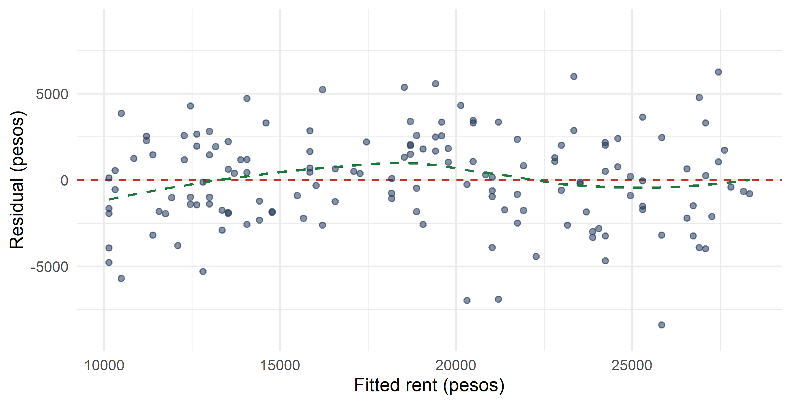
Assumption 1: linearity. A curve fitted with a straight line leaves a curve in the residuals.
To check linearity, plot the residuals against the fitted values \(\hat{y}\) and look for a systematic curve.
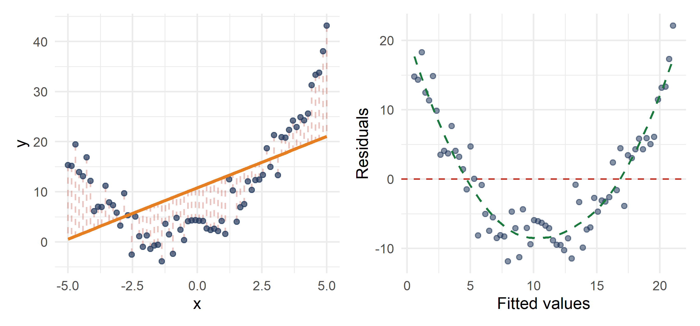
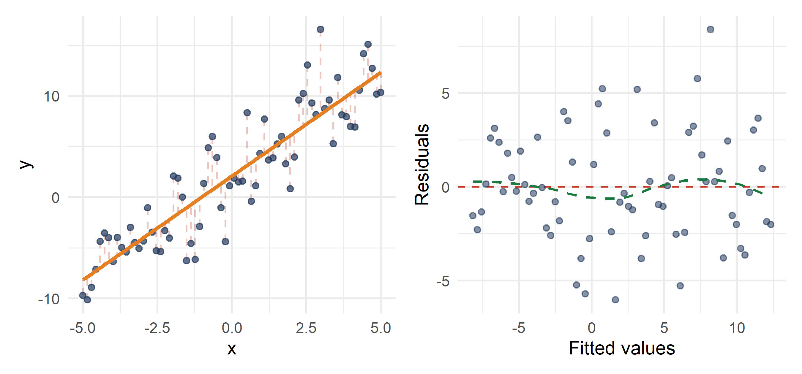
An online furniture retailer ran one month of digital ads in 120 Mexican cities. Each city got a different budget.
The data frame campaigns:
campaigns$ad_spend — ad budget that month, in thousands of pesoscampaigns$sales — sales that month, in thousands of pesosMarketing wants one number: how many pesos of sales does one more peso of ads bring? If that number is the same at every budget, the answer is simple — raise every budget.
Use campaigns (campaigns$ad_spend and campaigns$sales, both in thousands of pesos).
campaigns$sales on campaigns$ad_spend. Read the slope and \(R^2\).Keep the residuals in a vector, e <- residuals(reg_ads). Then subset it by the budget: mean(e[campaigns$ad_spend < 50]). For the middle group, combine two conditions with &.
The slope is 3.26 and \(R^2 = 0.927\). The mean residual is −38.1 for small budgets, +22.6 in the middle, and −19.1 for large budgets. The line is too high at both ends and too low in the middle: the residuals make an arch.
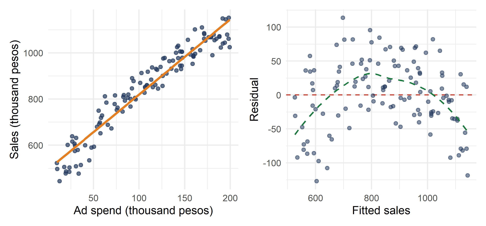
Use campaigns again.
campaigns$sales on campaigns$ad_spend using only the cities with a budget under 60.data = campaigns[campaigns$ad_spend < 60, ] fits the model on those rows only.
Small budgets: slope 4.28. Large budgets: slope 1.98. One more thousand pesos of ads brings about 4,300 pesos of sales where budgets are small, but only about 2,000 where they are already large. The single slope, 3.26, overstates the return of the big budgets by more than half. A plan that raises every budget would waste money in the big cities.
The returns fall as the budget grows. One way to let the line bend is to regress sales on the square root of ad spend:
\[\text{sales}_i = \beta_0 + \beta_1 \cssId{mt-rootad}{\sqrt{\text{ad\_spend}_i}} + u_i\]
The model is still linear in \(\beta_0\) and \(\beta_1\) — assumption 1 only asks for that. What changed is the regressor.
campaigns$root_ad, the square root of campaigns$ad_spend.campaigns$sales on campaigns$root_ad. Read \(R^2\).sqrt() is not on the sheet, but ^0.5 is.
campaigns$root_ad <- campaigns$ad_spend^0.5
reg_root <- lm(sales ~ root_ad, data = campaigns)
summary(reg_root)
plot(fitted(reg_root), residuals(reg_root))
e <- residuals(reg_root)
mean(e[campaigns$ad_spend < 50])
mean(e[campaigns$ad_spend >= 50 & campaigns$ad_spend <= 150])
mean(e[campaigns$ad_spend > 150])\(R^2\) rises from 0.927 to 0.943. The mean residuals are −5.6, +1.3 and +1.2: close to zero in every group. The arch is gone.
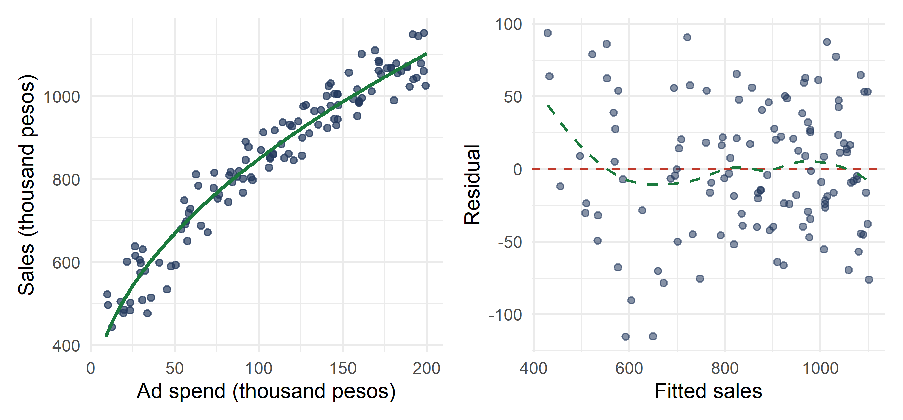
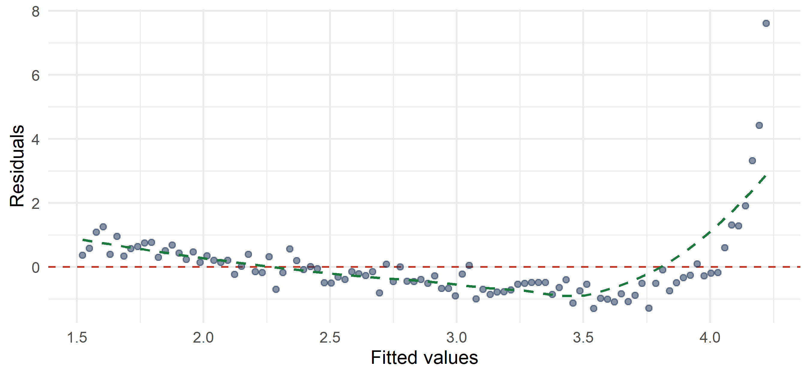
Linearity fails. The residuals drift down, then shoot up at the largest fitted values: the true relationship is a curve that drops fast for small \(x\) and then levels off (here \(y\) depends on \(1/x\)). A straight line cannot follow it.
Assumption 3: the same variance everywhere. When it fails, the residuals fan out.
Plot the residuals against \(\hat{y}\) and ask: does the vertical spread change as \(\hat{y}\) changes?
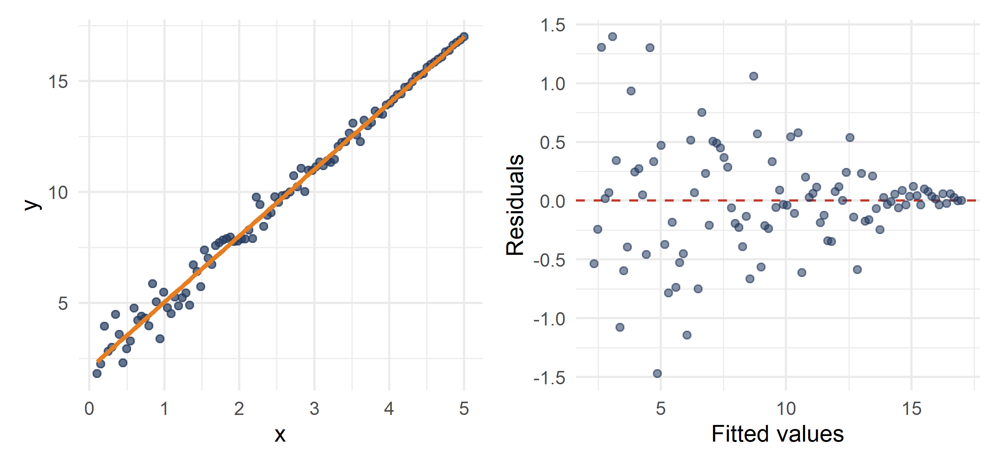
The spread shrinks as \(\hat{y}\) grows. The variance of the error is not constant. This is called heteroskedasticity.
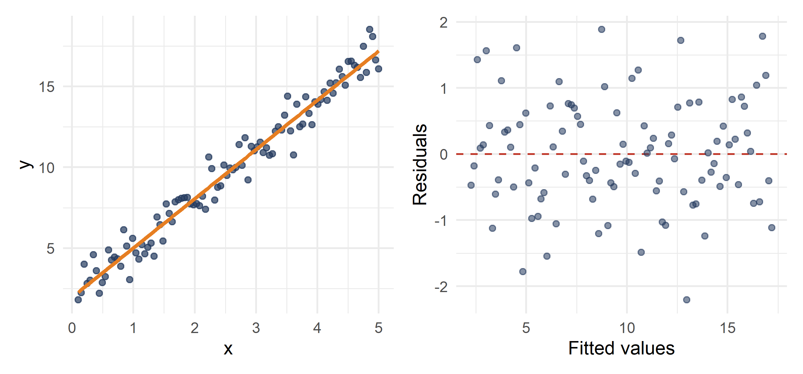
Same line, same \(x\). Now the band has the same width everywhere: homoskedasticity.
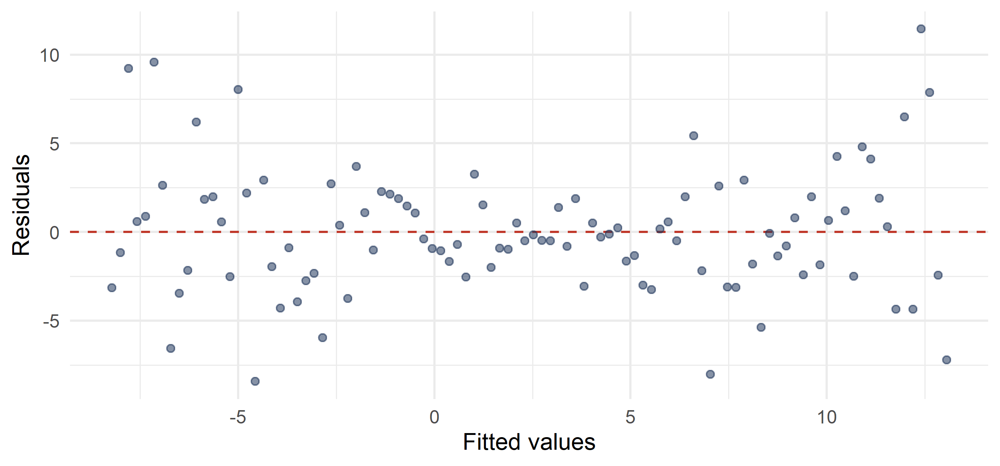
Constant variance fails. The spread is wide at both ends and narrow in the middle — a bow tie. The line itself is fine; the scatter around it is not the same everywhere.
spending holds 10,000 Mexican households from the ENIGH 2018 survey, per person, per month, in pesos:
spending$food_pc — food spendingspending$income_pc — incomeA supermarket chain forecasts food spending from income to plan its stock and its promotions. It sets a band of plus or minus one typical miss around each forecast. Should that band be the same width for a poor household and for a rich one?
Use spending (spending$food_pc and spending$income_pc, pesos per person per month).
spending$food_pc on spending$income_pc. Read the slope.plot(fitted(reg_food), residuals(reg_food)).
The slope is 0.113: each extra peso of income per person goes with about 11 centavos more food spending. The residual cloud is narrow at low fitted values and opens out to the right, like a fan.
A picture can mislead. Measure it: compute the standard deviation of the residuals within each income quartile of spending$income_pc.
spending$income_pc.sd() of the residuals for the poorest quarter, the second, the third and the richest quarter.q1 <- quantile(spending$income_pc, 0.25). The second quarter is e[spending$income_pc > q1 & spending$income_pc <= q2].
The residual standard deviation grows from 383 to 509, 688 and 1,167 pesos. The typical miss for the richest quarter is about 3 times the miss for the poorest.
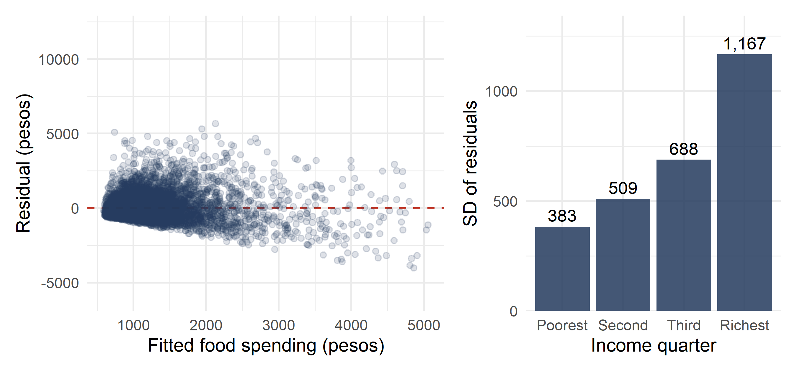
A manager who reads only the slope sees nothing wrong. The damage is in the precision attached to it.
Under assumptions 1–4, among all linear and unbiased estimators, OLS has the smallest variance:
\[\text{Var}(\hat{\beta}_1) \leq \text{Var}(\cssId{mt-b1prime}{\hat{\beta}_1'}) \qquad \text{and} \qquad \text{Var}(\hat{\beta}_0) \leq \text{Var}(\hat{\beta}_0')\]
OLS is BLUE: the Best Linear Unbiased Estimator.
A linear estimator is a weighted sum of the \(y_i\): \(\hat{\beta}_1' = \sum_i c_i y_i\). For OLS the weights are
\[\hat{\beta}_1 = \frac{\sum_i(x_i-\bar{x})y_i}{\sum_i(x_i-\bar{x})^2} \qquad \text{so} \qquad c_i^{OLS} = \frac{\cssId{mt-cw}{x_i-\bar{x}}}{\sum_i(x_i-\bar{x})^2}\]
Research continues: Hansen (2022) showed the word “linear” can be dropped. Under the same assumptions OLS is the best of all unbiased estimators (BUE).
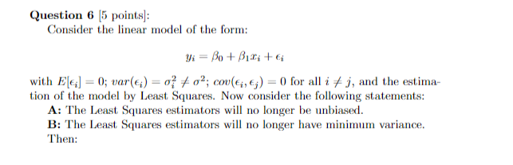
Which of the statements A and B are true?
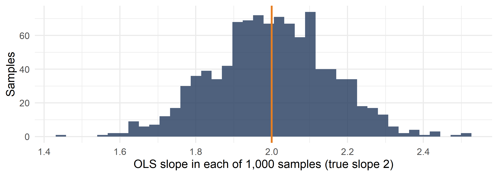
In 1,000 samples where the error spread grows with \(x\), the slopes average 2.000, the true value of 2. So A is false: OLS stays unbiased when the variance is not constant.
B is true. Gauss–Markov needs constant variance (assumption 3) to make OLS the minimum-variance estimator. With \(\text{Var}(\epsilon_i) = \sigma_i^2\), an estimator that gives less weight to the noisy observations can beat OLS.
spending also has the natural logs of both columns:
spending$log_food — log of spending$food_pcspending$log_income — log of spending$income_pcLogs pull in a long right tail. A 1,000-peso difference is large for a poor household and small for a rich one; on the log scale, both are measured as percentages.
spending$log_food on spending$log_income. Read the slope and \(R^2\).spending$income_pc as in Exercise 11.The quartiles are the same as before: quantile(spending$income_pc, 0.25) and so on. Only the residuals change.
The slope is 0.518 and \(R^2 = 0.299\). The residual standard deviations are 0.614, 0.576, 0.629 and 0.696 — nearly flat. The logs removed most of the fan.
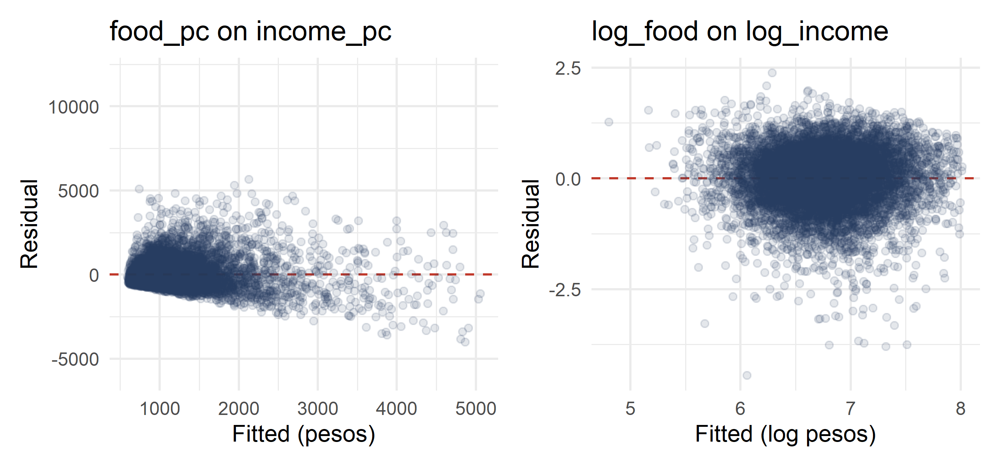
| Model | Meaning of \(\hat{\beta}_1\) |
|---|---|
| \(y\) on \(x\) | one more unit of \(x\) goes with \(\hat{\beta}_1\) more units of \(y\) |
| \(\log(y)\) on \(x\) | one more unit of \(x\) goes with about \(100\,\hat{\beta}_1\) percent more \(y\) |
| \(\log(y)\) on \(\log(x)\) | one percent more \(x\) goes with about \(\hat{\beta}_1\) percent more \(y\) — an elasticity |
Food: \(\hat{\beta}_1 = 0.518\). A household with 10% more income per person spends about 5.2% more on food per person. Food spending rises with income, but less than in proportion — food is a necessity.
The other fix keeps the model and corrects only the standard errors (heteroskedasticity-robust standard errors). It comes later in the course.
Assumption 4: one observation’s error says nothing about the next one’s.
When the data come in time order, check whether each residual looks like the one before:
If the errors are uncorrelated, every one of these correlations should be close to 0.
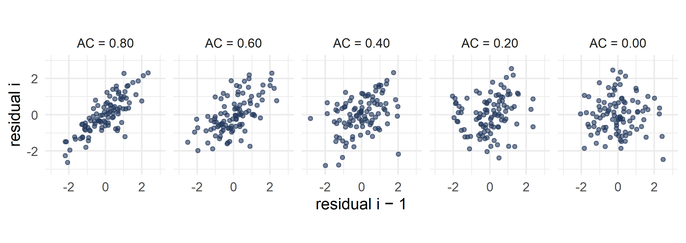
From left to right the tilt fades. At the right, knowing yesterday’s residual tells you nothing about today’s.
bikes$date runs from January 2017 to December 2019. Rain, a metro closure or a holiday week lasts more than one day.
If temperature misses a day because of a metro closure, will it miss the next day too?
Use bikes (bikes$date, bikes$trips, bikes$temp; 781 weekdays in date order).
bikes$trips on bikes$temp against bikes$date. Do you see long runs above or below zero?With e <- residuals(reg), the vector e[2:781] is “today” and e[1:780] is “the day before”. Put both into cor().
There are long runs: stretches of weeks above zero, then weeks below. The lag-1 correlation is 0.552 and the lag-2 correlation is 0.378. A day the line under-predicts is usually followed by another one.
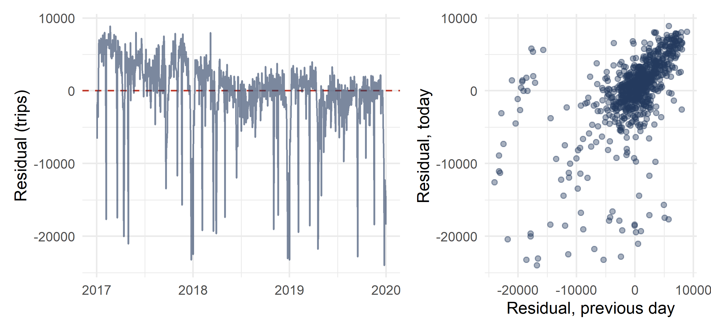
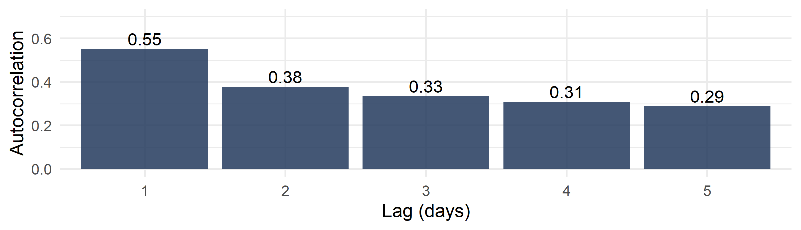
summary() treat every day as new information, so they are too small.For the Ecobici client, the slope of 724 trips per degree is a fair estimate. The precision printed next to it is too optimistic.
Assumption 5. Pictures first, then a formal test.
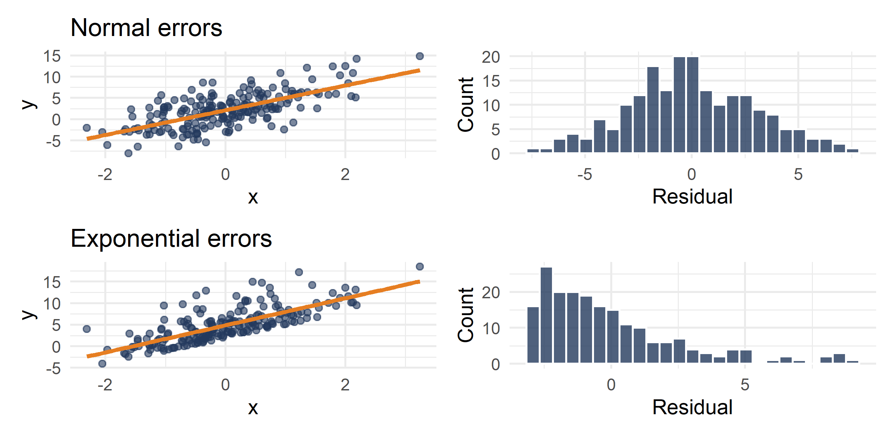
Top: a bell. Bottom: a long right tail — clearly not normal.
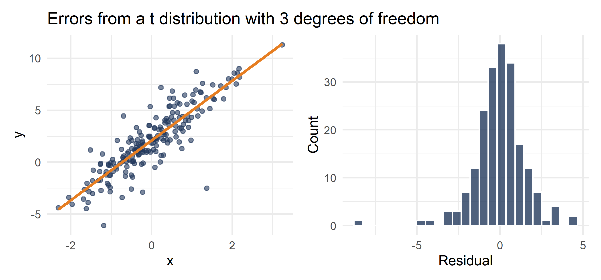
This looks almost like a bell. But the errors come from a \(t_3\) distribution: too many values far from the centre. A histogram cannot show this well. We need a sharper tool.
A quantile–quantile plot compares the quantiles of the residuals with the quantiles they would have if they came from a normal distribution.
Standardise the residuals: subtract the mean, divide by the standard deviation.
Sort them from smallest to largest. Give each an index \(i\): 1 is the smallest, \(n\) the largest.
Each one’s cumulative probability is the share of the data below it:
\[CP_i = \frac{\cssId{mt-qqi}{i}}{\cssId{mt-qqn1}{n+1}}\]
Find the standard normal quantile with that probability, qnorm(CP).
Plot the sample values against the normal quantiles. If the residuals are normal, the points lie on the 45° line.
Use the landlord’s regression of rents$rent on rents$size (150 apartments).
z.p for \(i = 1, \dots, 150\).z against the normal quantiles qnorm(p).(1:150) / 151 gives all 150 probabilities at once. quantile(z, p) returns the sample value at each of those probabilities — it does the sorting for you.
| Index i | CP = i/151 | Normal quantile | Standardised residual |
|---|---|---|---|
| 1 | 0.007 | -2.477 | -3.110 |
| 2 | 0.013 | -2.219 | -2.580 |
| 3 | 0.020 | -2.056 | -2.558 |
| 4 | 0.026 | -1.935 | -2.111 |
| 74 | 0.490 | -0.025 | 0.029 |
| 75 | 0.497 | -0.008 | 0.040 |
| 76 | 0.503 | 0.008 | 0.064 |
| 77 | 0.510 | 0.025 | 0.073 |
| 147 | 0.974 | 1.935 | 1.990 |
| 148 | 0.980 | 2.056 | 2.067 |
| 149 | 0.987 | 2.219 | 2.224 |
| 150 | 0.993 | 2.477 | 2.315 |
The smallest four, the middle four and the largest four of the 150 rows. In each row the last two columns are close: the residuals sit where a normal distribution would put them.
Hover over the points.
Residuals from a chi-square distribution. The points bend away from the line into a banana: the right tail is too long, the left tail too short.
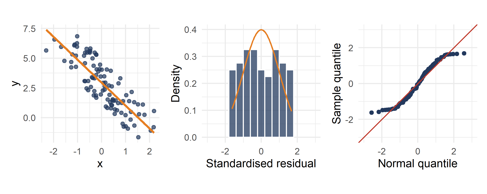
Uniform errors: no values far out. The Q-Q plot makes an S — the smallest residuals are not small enough and the largest not large enough.
Repeat Exercise 14 for the regression of bikes$trips on bikes$temp (781 days). Which tail leaves the line? What kind of days are they?
Now there are 781 residuals, so the probabilities are (1:781) / 782.
The middle follows a straight line, but the left tail drops far below it: a few days are 3 to 5 standard deviations below the line. These are holidays such as Christmas and New Year’s Day, when almost nobody rides to work. The residuals are not normal.
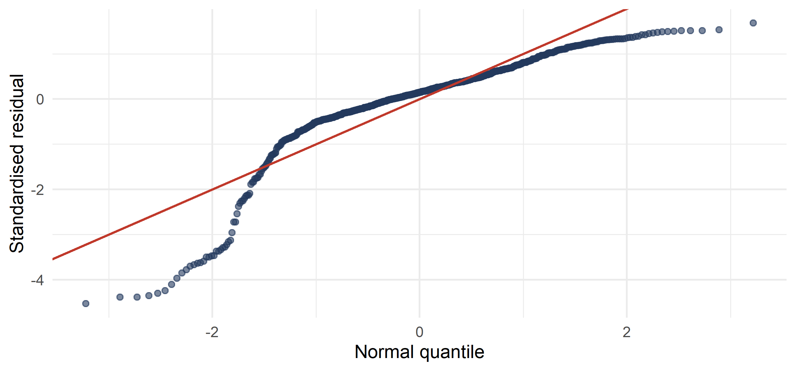
A normal distribution is symmetric: its skewness is 0.
\[S = \frac{\cssId{mt-m3}{\frac{1}{n}\sum_{i=1}^{n}(x_i - \bar{x})^3}}{\left(\cssId{mt-m2}{\frac{1}{n}\sum_{i=1}^{n}(x_i - \bar{x})^2}\right)^{3/2}}\]
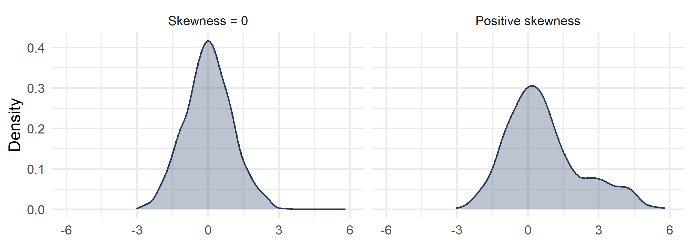
The kurtosis of a normal distribution is 3. Excess kurtosis subtracts that 3, so for a normal distribution it is 0:
\[EK = \frac{\cssId{mt-m4}{\frac{1}{n}\sum_{i=1}^{n}(x_i - \bar{x})^4}}{\left(\frac{1}{n}\sum_{i=1}^{n}(x_i - \bar{x})^2\right)^{2}} \cssId{mt-minus3}{- 3}\]
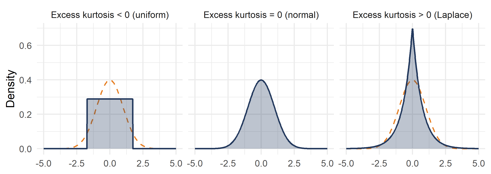
All three have variance 1. The dashed orange curve is the normal, for reference.
\[JB = \frac{\cssId{mt-jbn}{n}}{6}\left(\cssId{mt-jbs}{S^2} + \frac{\cssId{mt-jbk}{EK^2}}{4}\right)\]
\(H_0\): the residuals come from a normal distribution (JB is small) against \(H_A\): they do not (JB is large).
Only a large \(JB\) is evidence against \(H_0\), so the test is one-sided. Reject at level \(\alpha\) if \(JB > \chi^2_{1-\alpha;\,2}\). The p-value is \(P(\chi^2_2 \geq JB)\).
Use the regression of rents$rent on rents$size (\(n = 150\)). At the 5% level, test
\(H_0\): the residuals are normal against \(H_A\): they are not.
Store the deviations once: d <- e - mean(e). Then mean(d^3) is the top of \(S\) and mean(d^2) is inside the bottom. qchisq(0.95, 2) is the critical value; 1 - pchisq(JB, 2) is the p-value.
\(S = -0.223\), \(EK = 0.116\), \(JB = 1.32\). The critical value is 5.99 and the p-value 0.516. Do not reject \(H_0\): nothing in the residuals speaks against normality.
Same test for the regression of bikes$trips on bikes$temp (\(n = 781\)): \(H_0\): the residuals are normal against \(H_A\): they are not, at the 5% level.
\(S = -1.947\) (a long left tail) and \(EK = 5.250\) (heavy tails). \(JB = 1{,}390\), far above 5.99; the p-value is 0. Reject \(H_0\): the Ecobici residuals are not normal. With 781 days, the central limit theorem still keeps the t-test on the slope roughly valid.
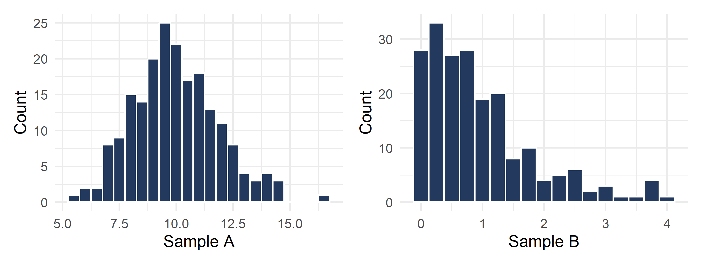
Two samples of 200. Which one would the Jarque–Bera test reject?
Sample A (drawn from a normal): \(S = 0.351\), \(EK = 0.167\), \(JB = 4.33\), p-value 0.114. Do not reject.
Sample B (drawn from an exponential): \(S = 1.400\), \(EK = 1.692\), \(JB = 89.1\), p-value below 0.001. Reject: not normal.
Not an assumption — a warning. Some observations have far more say in the slope than others.
Grey points are fixed. Drag the red point. Where does one point pull the line the most: in the middle of the \(x\) range, or far out to one side?
An influential point is not an assumption failure. It is a warning that the estimate is fragile. The check: fit the model with and without it, and compare.
In W07 the Ecobici residual histogram had a long left tail. Section 7 found the same tail in the Q-Q plot. Those days — Christmas, New Year’s Day, Holy Week — are also some of the coldest days in the data.
Do a few holidays change the answer to the client’s question, the trips per degree?
Use bikes (bikes$trips, bikes$temp, bikes$date).
bikes$trips on bikes$temp. Keep only the days whose residual is above −12,000 trips, in a new data frame bikes_normal.bikes_normal. Compare the slope and \(R^2\) with 723.6 and 0.088.bikes[residuals(reg) > -12000, ] keeps the rows you want. table(residuals(reg) < -12000) counts the others, and bikes[residuals(reg) < -12000, ] prints them.
33 days are dropped: Christmas and New Year’s Day every year, Holy Week, 1 May, the long weekends, and 20 September 2017, the day after the earthquake. Without them the slope falls from 723.6 to 559.4 trips per degree, and \(R^2\) rises from 0.088 to 0.112. More than a fifth of the “temperature effect” came from 33 unusual days, most of them cold.
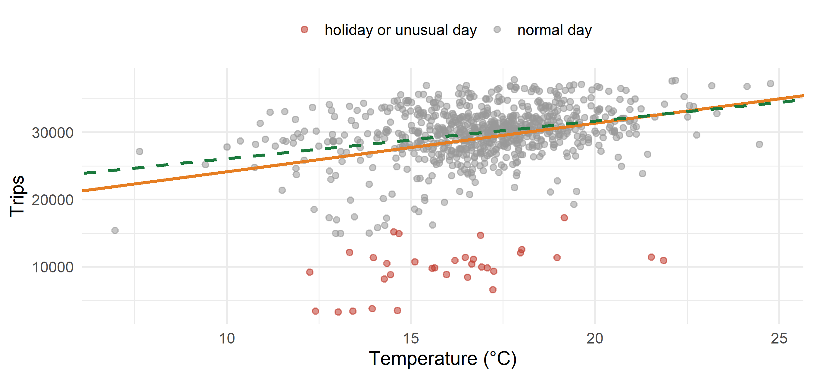
For the client: the fair number for an ordinary weekday is closer to 560 trips per degree. Holidays belong in the model as their own variable — that is multiple regression, from W10.
One checklist, one verdict, and one question the residuals cannot answer.
| Assumption | Check | If it fails | What to do |
|---|---|---|---|
| linearity | residuals against fitted: curve or arch? | coefficients describe the wrong shape; forecasts are wrong in a pattern | transform \(x\) or \(y\) |
| constant variance | residuals against fitted: fan? SD by group | slope fine; standard errors, tests, intervals wrong | logs; robust standard errors |
| uncorrelated errors | residuals in time order; lag correlations | slope fine; standard errors too small | model the time pattern |
| normality | histogram, Q-Q plot, Jarque–Bera | small samples: tests and intervals unreliable | large \(n\) helps; transform \(y\) |
| no single point in charge | refit without unusual points | one observation decides the slope | report both; find out why |
Always fit first, then check. The residual plots are the first thing to look at.
Fit: \(R^2 = 0.088\) and a typical miss of 5,302 trips. But \(F = 75.3\): the temperature effect is real.
Diagnostics: the line is the right shape. But the residuals are strongly autocorrelated (0.55), not normal (JB = 1,390), and their spread is larger on cold days, which is where the holidays fall.
So the slope is usable, but the standard errors from summary() are too optimistic, and 33 holidays pull the slope up by about 160 trips per degree. The model is not useless. It is incomplete.
A firm regresses employees’ salary on their years of education to set its pay scale.
Ability, family background, connections and ambition all sit in \(u_i\), and all of them move with education. Then \(E(u_i) = 0\) fails at a given level of education: the error is higher, on average, for the more educated. The slope picks up part of their effect and is biased — usually upwards.
No residual plot can show this. OLS makes the residuals uncorrelated with \(x\) by construction, even when the true errors are not.
The dashed green line is the truth: \(y = 0.5x\). Grey points are the data, the orange line is the OLS fit.
A tech company in Guadalajara budgets hiring with a regression of salary on experience. The data frame hires has its 120 engineers:
hires$experience — years of experiencehires$salary — monthly gross salary, in pesosGive Finance the full check of the regression of hires$salary on hires$experience:
hires$experience.summary()?reg_salary <- lm(salary ~ experience, data = hires)
summary(reg_salary)
a <- anova(reg_salary)
a
s <- (a[2, 2] / 118)^0.5
s
F_stat <- a[1, 2] / (a[2, 2] / 118)
F_stat
qf(0.95, 1, 118)
plot(fitted(reg_salary), residuals(reg_salary))
e <- residuals(reg_salary)
ex <- hires$experience
q1 <- quantile(ex, 0.25)
q2 <- quantile(ex, 0.50)
q3 <- quantile(ex, 0.75)
sd(e[ex <= q1])
sd(e[ex > q1 & ex <= q2])
sd(e[ex > q2 & ex <= q3])
sd(e[ex > q3])
d <- e - mean(e)
S <- mean(d^3) / mean(d^2)^1.5
EK <- mean(d^4) / mean(d^2)^2 - 3
JB <- 120 / 6 * (S^2 + EK^2 / 4)
JB
qchisq(0.95, 2)
1 - pchisq(JB, 2)Real questions from last spring’s Midterm 2. A FinTech app, \(n = 500\) users. The data frame fintech is loaded below:
fintech$MonthlyVolume — the user’s monthly transaction volumefintech$LinkedAccounts — how many bank accounts the user has linked to the appQ25. Regress MonthlyVolume on LinkedAccounts. Calculate SST, SSR, SSE. Report SSR.
Q26a. Using the F-test, test whether LinkedAccounts explains any variation in MonthlyVolume at the 1% significance level. State your hypotheses. Calculate the F-statistic.
Q26b. Find the critical value for this F-test and state your conclusion. Do you reject or fail to reject?
a <- anova(reg) gives \(SSR\) in a[1, 2] and \(SSE\) in a[2, 2]. At the 1% level the critical value is qf(0.99, 1, 498).
\(H_0: \beta_1 = 0\) (LinkedAccounts explains nothing) against \(H_A: \beta_1 \neq 0\).
Q25: \(SSR = 311{,}370\), \(SSE = 2{,}077{,}264\), \(SST = 2{,}388{,}634\).
Q26a: \(F = 311{,}370 / 4{,}171 = 74.65\).
Q26b: the 1% critical value is \(F_{0.99;\,1,\,498} = 6.686\). Since \(74.65 > 6.686\), reject \(H_0\): the number of linked accounts explains a real part of the variation in monthly volume.
Q30. The exam showed a plot of the residuals from a linear regression against the predictor. Comment on what you observe in this plot. Does the plot suggest that all OLS assumptions are satisfied? If not, which assumption might be violated, and what would be the consequences?
The data behind that plot are in q17: the predictor q17$x and the outcome q17$y. Draw the plot yourself, then answer.
plot(q17$x, residuals(reg)). To put a number on a pattern, compare the mean residual for small, middle and large q17$x.
The residuals make a clear arch: negative for small \(x\) (mean −8.9), positive in the middle (+27.6), negative again for large \(x\) (−27.0). The linearity assumption is violated: the true relationship is curved. Consequences: the straight line describes the wrong shape, so its coefficients are misleading; predictions are systematically too high at both ends and too low in the middle; and the standard errors, tests and intervals assume a correct model, so they are unreliable too.
Next week: more than one regressor. Holidays, pollution and the day of the week go into the Ecobici model together.
Problems from this week’s set. ← Back to the exam spotlight · ← Back to the summary
[P2 #4c]
cpsemployed holds 2,809 employed workers from the US Current Population Survey:
cpsemployed$earnwk — weekly earnings, in dollarscpsemployed$educ — years of educationRegress cpsemployed$earnwk on cpsemployed$educ. Plot the residuals against cpsemployed$educ.
Are the residuals homoskedastic or heteroskedastic? Back your answer with the residual standard deviation for workers with 11 years or less, exactly 12 years, and 18 years of education.
e[cpsemployed$educ == 12] keeps the residuals of the workers with 12 years of education.
[P2 #11]
The Association of Turkish Travel Agencies reports the number of foreign tourists visiting Turkey and tourist spending, by year. The data frame tourism has 19 years:
tourism$tourists — foreign tourists, in millionstourism$spending — tourist spending, in billions of dollarsDescribe the relationship between the number of tourists and spending.
What are the explanatory and response variables?
Why might we want to fit a regression line to these data?
Do the data meet the conditions for fitting a least squares line? Use the scatterplot, the residual plot and the histogram of the residuals.
Strong, positive and close to linear: \(\widehat{\text{spending}} = -0.32 + 0.746 \times \text{tourists}\), with \(R^2 = 0.995\).
Explanatory: the number of foreign tourists. Response: tourist spending. More visitors drive total spending, not the other way round.
To predict total tourist spending from the number of visitors — useful for budgets, planning and tourism policy.
Linearity: the scatterplot is a straight band, and the residuals show no curve. Constant variance: the residuals keep about the same spread across the range. Normality: the histogram is roughly bell-shaped. Independence: the data are yearly, a time series, so consecutive years may be related — a possible concern. Overall, the conditions are largely met.
[P2 #12]
Starbucks lists only the calories of its food items. We want to predict the carbohydrates of an item from its calories. The data frame starbucks has 29 items:
starbucks$calories — caloriesstarbucks$carb — carbohydrates, in gramsDescribe the relationship between calories and carbohydrates.
What are the explanatory and response variables?
Why might we want to fit a regression line to these data?
Do these data meet the conditions for fitting a least squares line?
Look at the mean residual for items under 250 calories, between 250 and 400, and over 400.
plot(starbucks$calories, starbucks$carb)
reg_carb <- lm(carb ~ calories, data = starbucks)
summary(reg_carb)
e <- residuals(reg_carb)
plot(starbucks$calories, e)
hist(e, breaks = 8)
mean(e[starbucks$calories < 250])
mean(e[starbucks$calories >= 250 & starbucks$calories <= 400])
mean(e[starbucks$calories > 400])Positive but not linear. Carbohydrates rise steeply for low-calorie items and then level off: a concave curve. \(R^2 = 0.901\).
Explanatory: calories. Response: carbohydrates in grams.
Starbucks shows only calories, so a regression lets customers who watch their carbohydrates estimate them from the calories on the label.
Linearity is violated: the residuals form an arch — on average −2.2 g below 250 calories, +1.5 g between 250 and 400, and −1.5 g above 400. The histogram is roughly symmetric and the spread is roughly even. The straight line is the wrong shape; a curved model would fit better.
[P2 #24]
cig holds the 50 US states plus DC in 2019:
cig$cigsales — annual cigarette sales, packs per personcig$producer — 1 if the state produces more than 20 million pounds of tobaccoBefore any regression, compute the mean of cig$cigsales for producer and non-producer states. How many states are in each group?
Regress cig$cigsales on cig$producer. Check that \(\hat{\alpha}\) is the non-producer mean and \(\hat{\alpha} + \hat{\beta}\) the producer mean. Why must this be so?
What does the slope \(\hat{\beta}\) measure?
Test \(H_0: \beta = 0\) against \(H_A: \beta \neq 0\) at the 5% level. Build the t statistic from vcov() first, then check with summary().
Build the two-sample pooled-variance \(t\) statistic by hand: each group’s mean and variance, the pooled variance, the standard error, the p-value from pt(). Compare with (d).
Draw side-by-side boxplots of cig$cigsales by cig$producer. Do the groups look roughly normal with equal spread?
table(cig$producer) counts the groups. The pooled variance weights each group’s variance by its degrees of freedom: \((n_0 - 1)\) and \((n_1 - 1)\), over \(n_0 + n_1 - 2\).
table(cig$producer)
mean(cig$cigsales[cig$producer == 0])
mean(cig$cigsales[cig$producer == 1])
cig_results <- lm(cigsales ~ producer, data = cig)
cig_results
se_b <- vcov(cig_results)[2, 2]^0.5
t_stat <- 15.211 / se_b
t_stat
2 * (1 - pt(t_stat, 49))
qt(0.975, 49)
summary(cig_results)
x0 <- cig$cigsales[cig$producer == 0]
x1 <- cig$cigsales[cig$producer == 1]
sp2 <- (43 * var(x0) + 6 * var(x1)) / 49
se <- (sp2 * (1 / 44 + 1 / 7))^0.5
t_pool <- (mean(x1) - mean(x0)) / se
t_pool
2 * (1 - pt(t_pool, 49))
boxplot(cigsales ~ producer, data = cig)44 non-producer states with mean 36.73 packs, 7 producer states with mean 51.94.
\(\hat{\alpha} = 36.73\), the non-producer mean, and \(\hat{\alpha} + \hat{\beta} = 36.73 + 15.21 = 51.94\), the producer mean. With a 0/1 regressor the line only has to fit two columns of points, and least squares puts it through each group’s mean.
Producer states sell on average 15.21 more packs per person per year.
\(SE = 6.489\), \(t = 2.344 > 2.010\), p-value 0.023. Reject \(H_0\) at 5%.
Pooled \(t = 2.344\), p-value 0.023 — exactly the same. A regression on a dummy is the two-sample t-test with equal variances.
Producer states sell more. Their spread is not larger: standard deviations are 16.5 (non-producers) and 11.6 (producers). With only 7 producer states, normality and equal variance are hard to judge.
[P2 #25]
auc holds 684 eBay auctions of iPod minis, June–July 2006:
auc$finalprice — final price, in dollarsauc$bidders — number of biddersauc$log_price — natural log of auc$finalpriceRegress auc$finalprice on auc$bidders and write the fitted equation.
Draw and discuss: (i) residuals against fitted values; (ii) a histogram of the residuals; (iii) a Q-Q plot of the residuals, built by hand; (iv) residuals against auc$bidders.
Which assumptions — linearity, normality, constant variance — look satisfied, and which look violated?
Find the 5 auctions with the largest residuals in size. What might explain them?
Bonus: regress auc$log_price on auc$bidders and repeat the residual plot and the Q-Q plot. Does the log help?
For the 5 largest in size, compare the squared residuals with a cutoff: auc[residuals(auc_results)^2 > 100^2, ], then raise the cutoff until 5 rows are left.
auc_results <- lm(finalprice ~ bidders, data = auc)
summary(auc_results)
e <- residuals(auc_results)
plot(fitted(auc_results), e)
hist(e, breaks = 30)
z <- (e - mean(e)) / sd(e)
p <- (1:684) / 685
plot(qnorm(p), quantile(z, p))
plot(auc$bidders, e)
mean(e[auc$bidders <= 3])
mean(e[auc$bidders >= 4 & auc$bidders <= 8])
mean(e[auc$bidders > 8])
auc[e^2 > 117.5^2, ]
reg_log <- lm(log_price ~ bidders, data = auc)
summary(reg_log)
plot(fitted(reg_log), residuals(reg_log))
e2 <- residuals(reg_log)
z2 <- (e2 - mean(e2)) / sd(e2)
plot(qnorm(p), quantile(z2, p))\(\widehat{\text{finalprice}} = 103.64 + 1.80 \times \text{bidders}\). Each extra bidder goes with 1.80 dollars more, but \(R^2 = 0.024\): bidders explain very little.
Constant variance: roughly fine. Normality: mild departure (\(JB = 6.6\), p-value 0.037 — a longer right tail). Linearity: questionable, because of the U.
Auctions 164, 172, 200, 450 and 501, all with prices of 225–255 dollars, about 118 to 135 dollars above the line. Possible reasons: a bidding war between two determined buyers, a new or rare item, or extra accessories in the lot.
No. With logs, a few very cheap auctions become extreme low values: the residuals get a long left tail (skewness −2.2, \(JB\) over 4,700) and their spread now shrinks as bidders grow. Logs help a right-skewed \(y\); this price is not strongly right-skewed.
[P2 #26]
ex holds 77 university students:
ex$exam1 — score on the first exam, out of 100ex$exam2 — score on the second exam, out of 100Draw the scatterplot of ex$exam2 against ex$exam1. Does it look linear?
Regress ex$exam2 on ex$exam1 and write the equation. If a student scores 10 points more on exam 1, how much higher do we expect exam 2?
At the 1% level, test \(H_0: \beta_1 = 0\) against \(H_A: \beta_1 \neq 0\): test statistic, p-value, conclusion.
Report \(R^2\). What share of the variation in exam 2 is not explained by exam 1?
A student scored 85 on exam 1. Give (i) a point prediction of exam 2; (ii) a 95% confidence interval for the mean exam 2 score of all students with 85; (iii) a 95% prediction interval for this student.
Plot the residuals against the fitted values. Are linearity and constant variance reasonable?
Build a Q-Q plot of the residuals by hand, and test \(H_0\): the residuals are normal against \(H_A\): they are not, with Jarque–Bera at 5%.
new_data <- data.frame(exam1 = 85) holds the student to predict. Then predict(exam_results, new_data, interval = "confidence", level = 0.95).
plot(ex$exam1, ex$exam2)
exam_results <- lm(exam2 ~ exam1, data = ex)
summary(exam_results)
se_b1 <- vcov(exam_results)[2, 2]^0.5
t_stat <- 0.7072 / se_b1
t_stat
2 * (1 - pt(t_stat, 75))
qt(0.995, 75)
new_data <- data.frame(exam1 = 85)
predict(exam_results, new_data, interval = "confidence", level = 0.95)
predict(exam_results, new_data, interval = "prediction", level = 0.95)
e <- residuals(exam_results)
plot(fitted(exam_results), e)
z <- (e - mean(e)) / sd(e)
p <- (1:77) / 78
plot(qnorm(p), quantile(z, p))
d <- e - mean(e)
S <- mean(d^3) / mean(d^2)^1.5
EK <- mean(d^4) / mean(d^2)^2 - 3
JB <- 77 / 6 * (S^2 + EK^2 / 4)
JB
1 - pchisq(JB, 2)A moderate, positive, roughly linear relationship, with a lot of scatter.
\(\widehat{\text{exam2}} = 16.22 + 0.707 \times \text{exam1}\). Ten points more on exam 1 predict \(10 \times 0.707 = 7.07\) points more on exam 2. A slope below 1 is regression to the mean.
\(t = 8.712 > 2.643\) (the 1% critical value), p-value \(5.2 \times 10^{-13}\). Reject \(H_0\): exam 1 is a significant predictor of exam 2.
\(R^2 = 0.503\), so \(1 - 0.503 = 0.497\) — about half of the variation in exam 2 is not explained by exam 1.
No curve. The spread looks somewhat larger for low fitted scores — a mild concern, not a clear fan.
The Q-Q plot follows the line except for a few low scores. \(S = -0.59\), \(EK = 0.60\), \(JB = 5.64 < 5.99\), p-value 0.060: do not reject normality at 5%, but it is close.
[B7]
For each description, name the assumption in trouble and say what it does to your results.
Residuals form a clear U-shape against the fitted values.
The vertical spread of the residuals widens steadily as the fitted values grow.
A histogram of the residuals has a long right tail and several extreme values.
Residuals plotted in time order show long runs above zero, then long runs below.
One observation sits far to the right on the \(x\)-axis and pulls the fitted line towards it.
One example of each:
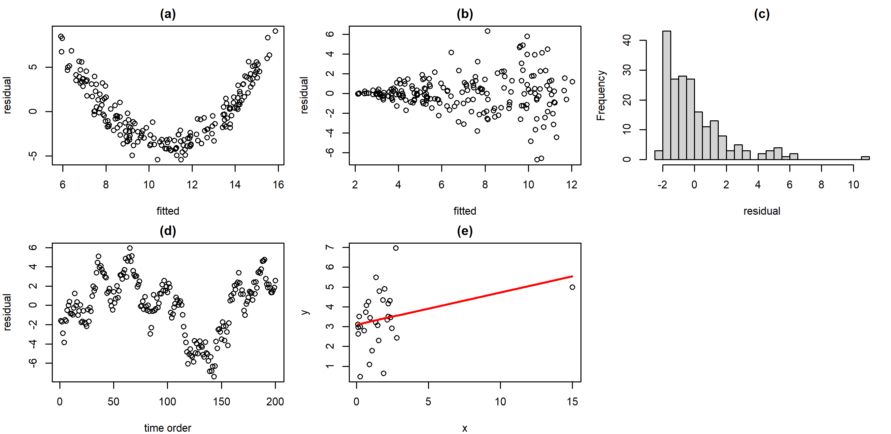
Linearity. The relationship is curved but the model is a straight line, so the coefficients describe the wrong shape and predictions are systematically wrong at both ends and in the middle.
Constant variance (homoskedasticity). The coefficients stay unbiased, but the standard errors are wrong, so t-tests and confidence intervals cannot be trusted.
Normality. In a small sample the \(t\) and \(F\) distributions no longer apply; in a large sample the central limit theorem largely rescues inference.
Independence (no autocorrelation). The standard errors are usually far too small, so results look much more significant than they are.
An influential, high-leverage point. Not strictly an assumption failure, but one point drives the slope: drop it and the answer changes. The estimate is fragile.
[B8]
A simple regression on \(n = 25\) observations gives \(SST = 4800\) and \(SSE = 1200\).
Compute \(SSR\).
Compute \(R^2\) and say what it means in words.
Compute the adjusted \(R^2\), \(\bar{R}^2 = 1 - (1 - R^2)\dfrac{n-1}{n-2}\).
Compute \(s^2 = SSE/(n-2)\) and the residual standard error \(s\).
Test \(H_0: \beta_1 = 0\) against \(H_A: \beta_1 \neq 0\) with the \(F\) statistic, using the 5% critical value \(F_{1,23} = 4.28\).
A colleague says: “\(R^2 = 0.75\), so the model is correct.” Give a one-sentence objection.
\(SSR = 3600\).
\(R^2 = 0.75\): the model accounts for 75% of the variation in \(y\); 25% is left unexplained.
\(\bar{R}^2 = 0.7391\).
\(s^2 = 52.17\) and \(s = 7.22\): a typical residual is about 7.2 units.
\(F = 3600 / 52.17 = 69.0 > 4.28\): reject \(H_0\). The regressor is highly significant. (With one regressor, \(F = t^2\).)
\(R^2\) measures how much variation is fitted, not whether the model is right — a curved relationship, a missing variable or heteroskedasticity can all sit behind a high \(R^2\), as the ad-budget line with \(R^2 = 0.93\) showed.
[B9]
A regression with \(n = 100\) has residuals with sample skewness \(S = 0.6\) and excess kurtosis \(K = 1.2\). Test normality with
\[JB = \frac{n}{6}\left(S^2 + \frac{K^2}{4}\right).\]
State \(H_0\) and \(H_A\).
Compute \(JB\).
The statistic follows a \(\chi^2\) distribution. How many degrees of freedom, and why?
Compare with the 5% critical value and give the p-value. What do you conclude?
The sample is large. Why are non-normal residuals less of a worry here than with \(n = 20\)?
\(H_0\): the residuals are normally distributed (\(S = 0\) and \(K = 0\)) against \(H_A\): they are not.
\(JB = 16.667 \times (0.36 + 0.36) = 12.0\).
2 degrees of freedom: the test combines two restrictions, zero skewness and zero excess kurtosis.
\(\chi^2_{0.95;\,2} = 5.991\) and the p-value is 0.0025. Since \(12.0 > 5.991\), reject normality.
With \(n = 100\) the central limit theorem makes the sampling distribution of \(\hat{\beta}\) close to normal even when the errors are not, so t-tests and intervals stay approximately valid. At \(n = 20\) there is no such protection.
[B10]
A regression of household food spending on income gives residuals whose standard deviation, within each income quartile, is
\[1{,}279 \qquad 1{,}535 \qquad 1{,}931 \qquad 3{,}339\]
from the poorest to the richest quarter.
What is this pattern called?
Are the coefficient estimates still unbiased? Explain.
What exactly does it break, and why does that matter for the t-tests you report?
Name two things you could do about it.
Why would a manager who reads only the coefficient, never the standard error, not notice the problem?
Heteroskedasticity: the error variance grows with income. The residual standard deviation rises by a factor of about 2.6.
Yes. Unbiasedness needs the errors to have mean zero given \(x\); it does not need constant variance.
The standard-error formula, which assumes one common \(\sigma^2\). The reported standard errors are wrong — typically too small — so t-statistics are too large, p-values too small and intervals too narrow. You declare things significant that are not.
Because the coefficient is untouched. “Each extra peso of income raises food spending by 0.053 pesos” is still a fine number. The damage is in the precision attached to it, which is what the standard error reports.
[B11]
Three models are fitted to the same data. Interpret the slope in each.
\(\widehat{\text{sales}} = 120 + 3.4\,\text{price}\) (both in pesos).
\(\widehat{\log(\text{sales})} = 4.2 - 0.27\,\text{price}\).
\(\widehat{\log(\text{sales})} = 1.8 + 0.51\,\log(\text{income})\).
Which of the three gives an elasticity? What does it mean for a 10% rise in income?
Give one reason, other than interpretation, why taking logs of a right-skewed variable often improves a regression.
\(e\) is about 2.718282, so \(e^{-0.27}\) is 2.718282^(-0.27).
Level–level. One peso more on price goes with 3.4 pesos more sales. (A positive sign is odd for a demand curve and should make you ask what else is going on.)
Log–level. One peso more on price goes with about 27% lower sales — exactly \(e^{-0.27} - 1 = -23.7\%\); the −27% reading is the usual approximation, good for small coefficients.
Log–log. One percent more income goes with 0.51% more sales.
Model (c) gives an elasticity. A 10% rise in income goes with about 5.1% more sales: sales are inelastic in income, like a necessity rather than a luxury.
Logs pull in the long right tail. That usually stabilises the error variance (fixes heteroskedasticity), reduces the pull of a few extreme observations, and often makes a curved relationship close to linear.
[C7]
H holds 74,203 Mexican households (ENIGH 2018) with positive income and positive food spending, in pesos per month:
H$monthly_income — household incomeH$food_spending — household food spendingH$log_income, H$log_food — their natural logsRegress H$food_spending on H$monthly_income. Report the intercept, the slope and \(R^2\).
Interpret the slope: how much more does a household spend on food for each extra peso of income?
Plot the residuals against the fitted values. Describe the cloud.
Compute the residual standard deviation in each quartile of H$monthly_income.
Regress H$log_food on H$log_income. Report the slope and \(R^2\), and read the slope as an elasticity.
Repeat (d) for the log model. Did the logs fix the problem? Which model would you report?
m1 <- lm(food_spending ~ monthly_income, data = H)
summary(m1)
plot(fitted(m1), residuals(m1))
e <- residuals(m1)
inc <- H$monthly_income
q1 <- quantile(inc, 0.25)
q2 <- quantile(inc, 0.50)
q3 <- quantile(inc, 0.75)
sd(e[inc <= q1])
sd(e[inc > q1 & inc <= q2])
sd(e[inc > q2 & inc <= q3])
sd(e[inc > q3])
m2 <- lm(log_food ~ log_income, data = H)
summary(m2)
e2 <- residuals(m2)
sd(e2[inc <= q1])
sd(e2[inc > q1 & inc <= q2])
sd(e2[inc > q2 & inc <= q3])
sd(e2[inc > q3])Intercept 2,666.09, slope 0.05331, \(R^2 = 0.1872\).
Each extra peso of monthly income goes with about 5.3 centavos more food spending — about 53 pesos more food per 1,000 pesos of income.
A fan: tight at low fitted values, spreading out as they grow. There is also a floor, because food spending cannot go below zero.
1,279, 1,535, 1,931 and 3,339 pesos: clear heteroskedasticity.
Slope 0.5073, \(R^2 = 0.2874\). A 1% rise in income goes with a 0.51% rise in food spending. Food is a necessity (Engel’s law).
0.701, 0.600, 0.573 and 0.612 — essentially flat. The logs fixed the heteroskedasticity. Report m2: its errors meet the constant-variance assumption and its slope is an elasticity. (The two \(R^2\) values are not strictly comparable: the dependent variables differ.)
[C8]
mtcars ships with R. It holds 32 cars:
mtcars$mpg — fuel economy, miles per gallonmtcars$wt — weight, in thousands of poundsmtcars$log_mpg — natural log of mtcars$mpgRegress mtcars$mpg on mtcars$wt. Report the intercept, the slope, \(R^2\) and the residual standard error.
Interpret the slope for a car that is 1,000 lb heavier.
The intercept is 37.3. Why does it have no sensible physical meaning?
Plot the residuals against the fitted values. Find the three cars with the largest residuals in size.
Two of those three are small, light, very efficient cars. What does that say about the straight line at the light end?
Regress mtcars$log_mpg on mtcars$wt and compare \(R^2\) with (a). Which fits better, and what does the slope mean now?
mtcars[residuals(mm)^2 > 25, ] keeps the cars whose residual is larger than 5 in size.
Intercept 37.285, slope −5.344, \(R^2 = 0.7528\), residual standard error 3.046 mpg.
A car 1,000 lb heavier gets on average 5.34 fewer miles per gallon.
It is the predicted mpg of a car weighing zero. The weights run from about 1.5 to 5.4, so this is far outside the data and physically meaningless — the intercept only positions the line.
Fiat 128 (+6.87), Toyota Corolla (+6.42) and Chrysler Imperial (+5.98).
Both light cars sit far above the line: the straight line under-predicts fuel economy at the light end. That is the sign of a curve — mpg falls steeply from light to medium weights, then flattens.
Slope −0.2718, \(R^2 = 0.7976\), up from 0.7528: the log model fits better. An extra 1,000 lb now goes with about 27% lower fuel economy (exactly \(e^{-0.2718} - 1 = -23.8\%\)): a constant percentage penalty instead of a constant 5.34 mpg.
The algebra behind the F-test.
Whether \(\beta_1 = 0\) or not, the error mean square estimates \(\sigma^2\) without bias:
\[E\left(\frac{SSE}{df_E}\right) = E\left(\frac{\sum_i \hat{u}_i^2}{n-2}\right) = \sigma^2, \qquad \frac{SSE}{\sigma^2} \sim \chi^2_{n-2}\]
Only if the null is true (\(\beta_1 = 0\)):
\[E\left(\frac{SSR}{df_R}\right) = E\left(\frac{\sum_i(\hat{y}_i-\bar{y})^2}{1}\right) = \sigma^2, \qquad \frac{SSR}{\sigma^2} \sim \chi^2_{1}\]
So under the null the ratio of the two, each divided by its degrees of freedom, is
\[F = \frac{SSR/df_R}{SSE/df_E} \sim F_{1,\,n-2}\]
If the alternative is true,
\[E(SSR) = \sigma^2 + \beta_1^2 \sum_i (x_i - \bar{x})^2\]
so the numerator tends to be larger than the denominator and \(F\) is large. When the model explains \(y\) well, the explained part outweighs the unexplained part.